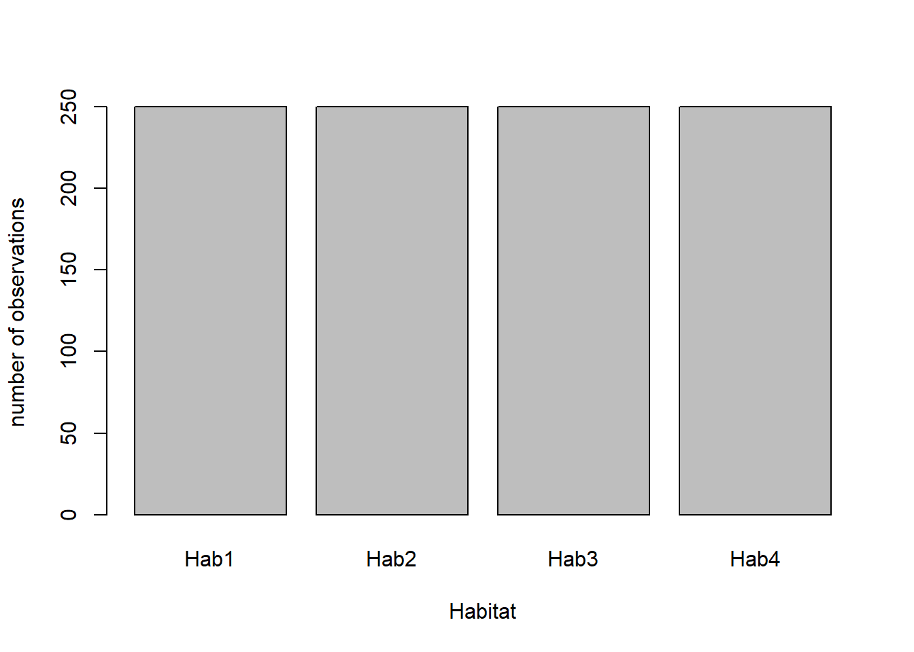
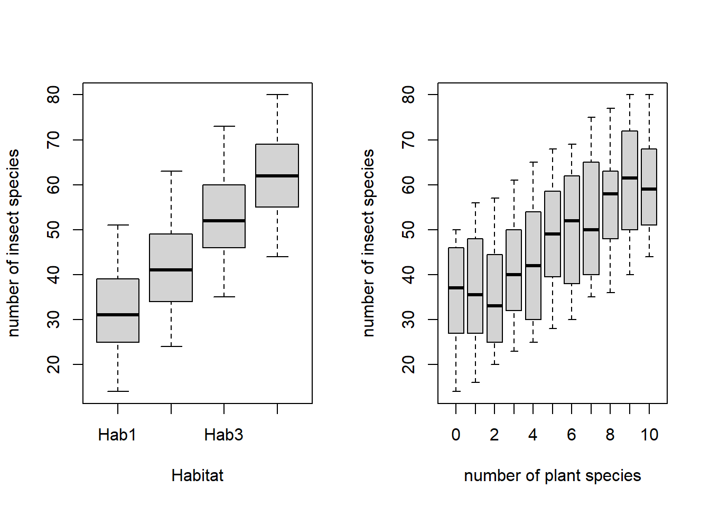
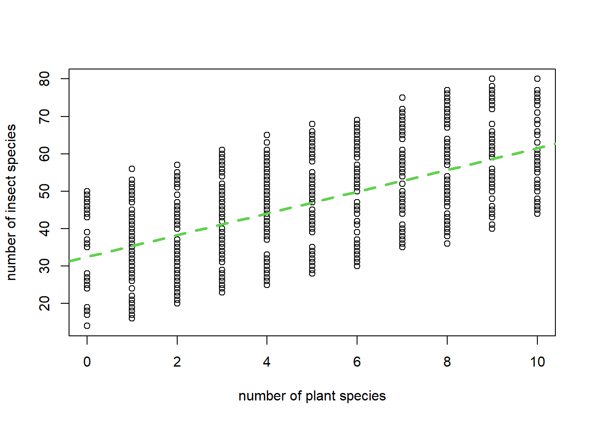

#for function kable for creating tables
library(knitr)Warning: package 'knitr' was built under R version 4.6.1#for function kable for creating tables
library(knitr)Warning: package 'knitr' was built under R version 4.6.1Let us imagine that you are doing a study, perhaps your Master thesis dissertation, evaluating the relationship between the number of species of insects as a function the number of species of plants, considering several types of habitats. In each type of habitat you conducted surveys at different plots, counting the number of plant species, the number of insect species, and recording these values and their corresponding habitat.
This section simulates you going to the field, collecting and recording the data. It will take you months to do so, but here it happens in a split of a second.
The next chunk of code, only visible on the .Rmd file, is not to be touched. It simulates data with some useful features and creates the file with the data, “fakedata.csv”, which you use below
The first thing to do is to read in the data that you spent so much effort collecting. This reads the data
# This is where you will change the input file when you have completed the instructions below
mydata <- read.csv("fakedata.csv")We can take a look a the data
kable(head(mydata))| ID | nspI | nspP | habitat |
|---|---|---|---|
| 1 | 25 | 3 | Hab1 |
| 2 | 41 | 8 | Hab1 |
| 3 | 27 | 4 | Hab1 |
| 4 | 46 | 9 | Hab1 |
| 5 | 46 | 9 | Hab1 |
| 6 | 17 | 0 | Hab1 |
explore the data structure
str(mydata)'data.frame': 1000 obs. of 4 variables:
$ ID : int 1 2 3 4 5 6 7 8 9 10 ...
$ nspI : int 25 41 27 46 46 17 34 43 32 32 ...
$ nspP : int 3 8 4 9 9 0 5 9 6 5 ...
$ habitat: chr "Hab1" "Hab1" "Hab1" "Hab1" ...see a summary of it
kable(summary(mydata))| ID | nspI | nspP | habitat | |
|---|---|---|---|---|
| Min. : 1.0 | Min. :14.00 | Min. : 0.000 | Length :1000 | |
| 1st Qu.: 250.8 | 1st Qu.:36.00 | 1st Qu.: 3.000 | N.unique : 4 | |
| Median : 500.5 | Median :47.00 | Median : 5.000 | N.blank : 0 | |
| Mean : 500.5 | Mean :46.92 | Mean : 4.981 | Min.nchar: 4 | |
| 3rd Qu.: 750.2 | 3rd Qu.:58.00 | 3rd Qu.: 7.000 | Max.nchar: 4 | |
| Max. :1000.0 | Max. :80.00 | Max. :10.000 | NA |
and we see that we have collected 1000 observations. We can see that the number of insects seems to increase with the number of plants, and it also seems to be a function of the habitat. We have a balanced number of observations per habitat
barplot(table(mydata$habitat),ylab="number of observations",xlab="Habitat")
We can look at the data:
par(mfrow=c(1,2))
boxplot(mydata$nspI~mydata$habitat,ylab="number of insect species",xlab="Habitat")
boxplot(mydata$nspI~mydata$nspP,ylab="number of insect species",xlab="number of plant species")
and we can say all sorts of things about the data, that for example
the mean number of insects per plot in habitat 1 is 32.128,
the mean number of insects per plot in habitat 2 is 41.5,
the mean number of insects per plot in habitat 3 is 52.388
the mean number of insects per plot in habitat 4 is 61.684
the overall mean number of insects per plot is 46.925.
The minimum, median and maximum number of species of insects per plot were 14, 47, 80, respectively.
Remember, if you want to see these numbers with less decimals, just round them as for the global mean number of insect species (i.e. per plot, pooled across habitats) here: 46.9.
We could even fit a linear model to the data to explain how the number of insect species per plot varies with the number of plant species:
par(mfrow=c(1,1))
plot(mydata$nspI~mydata$nspP,ylab="number of insect species",xlab="number of plant species")
lm1<-lm(nspI~nspP,data=mydata)
abline(lm1,lty=2,col=3,lwd=3)
You would see that the number of species of insects increases with the number of plant species, in particular, for each new species of plant, there will be on average 2.91 more species of insects. Clearly if you increase plant diversity you have more species of insects, so that could be a good way of increasing biodiversity1.
You are happy. But your supervisor tells you: “Great work, but… you actually forgot to sample two important habitats.”. Damn, you think, more work to do:
If you work with dynamic reports, redoing the analysis will be easy-peasy! Let’s see why/how below.
Lets pretend you went back to the field, collected more data on those new two habitats, and the file with the data for all the habitats is now fakedata2.csv. Do not touch any of the code in the chunk below (code not visible in the output file). This code just creates more data, the file fakedata2.csv, as if you had gone to the field again and puts all the data from the 6 habitats in a single file.
Now, you just have to wonder at what dynamic reports are best at. If you had just a plain old word with numbers you took from some excel calculations, you would have to redo all the analysis. Here, you don’t. See for yourself.
create a new “.Rmd” file that reads fakedata2.csv instead of fakedata.csv. Basically you can just go to windows explorer, create a copy of ExampleDataAnalysis.Rmd, so copy-paste the file ExampleDataAnalysis.Rmd, and name it say ExampleDataAnalysis2.Rmd
edit the line of code above, in the new file you just created that reads mydata <- read_excel("fakedata2.csv") to become mydata <- read_excel("fakedata2.csv") (note this line will therefore now read the file fakedata2.csv that contains all the data, with 6, not just 4, habitats)
compile the file ExampleDataAnalysis2.Rmd
check how all the results are updated immediately.
While you have to do new field work, all the analysis is reproduced by simply recompiling the same document, reading the new data instead of the old data.
This will save you days/weeks/months of work when it is for real!
we assume here there is a causal relation between the number of plant species and the number of insect species. However, we only have an observational study, not an experimental study, so that is not the case for granted. Nonetheless, let us assume here that the relation is causal indeed, so that the story has a happy ending with you publishing a paper in Nature or some such!↩︎